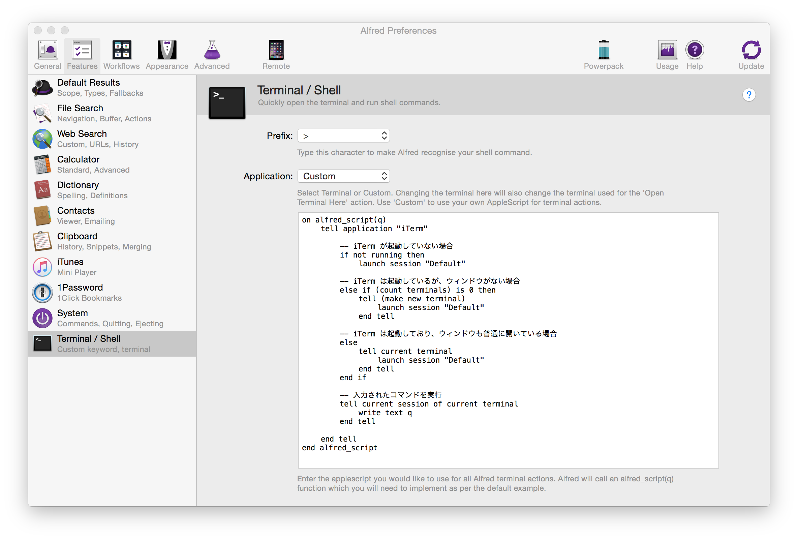

Alfred をバージョンアップすると iTerm2 でのコマンド実行ができなくなった
Alfred から実行するターミナルコマンドは、iTerm2 を使用していたが、Alfred のバージョンアップをすると iTerm2 が起動しなくなっていた。
調べてみると、Alfred 2.7.2 から Terminal コマンドを iTerm2 上で実行したい場合は、”Custom” スクリプトの作成が必要なとのこと。https://www.alfredapp.com/blog/tips-and-tricks/better-iterm-integration-in-alfred/
With the upcoming release of Alfred 2.7.2, the default iTerm integration has been replaced by the “Custom” scripts option. This allows for a more up-to-date and more flexible way to handle the iTerm integration, using scripts created by one of our fantastic users, Stuart Ryan.
カスタムスクリプトの作成
iTerm2 を Alfred から利用したい人のために、スクリプトを公開されている人もいる。
公開されているスクリプトだと思った感じに動かなかったので、こんな感じのスクリプトを書いた。動きとして、常に新しいタブを開いて、入力されたコマンドを実行する。
|
|
上記スクリプトを Alfred の [Features] -> [Terminal / Shell] -> [Application:] で Custom を選択し、登録する。

無事、iTerm2 復活。